RECHERCHES DE NOBLESSE RECHERCHES DE NOBLESSE
RECHERCHES DE NOBLESSE RECHERCHES DE NOBLESSE
Référence : La Recherche de Montfaut (1463) dans Revue de l'Avranchin,
1929-1930, fascicules n°140, 141 et 142
Provenance : Christiane Blin
ELECTION de LISIEUX
Sergenterie de Barnay Montfort
Robert Campion, de saint philbert sur Rille
ELECTION de BAIEUX
Sergenterie de Thorigny
Jehan le Champion de conde
ELECTION d'AVRANCHES
Sergenterie Rouxel
Maistre Jehan Champion de sourdeval
ELECTION de COUSTANCES
Sergenterie de Moyon
Jehan le Campion de saint Ronfare
Sergenterie de Sabot
Pierre Champion de la meurbraquiere
Référence : Recherche des élus de la Vicomté de Bayeux faite en 1523
par Jacques du Bosc, commissaire du Roy pour la recherche des nobles et
usurpateurs de noblesse dans la dite Vicomté ; copie faite en 1868 par
le Vicomte de Toustain
Provenance : Archives Départementales de la Manche
Robert Campion, Escr, sgr du fief de Corbellière, assis à Condé sur Vire, produisant, descendait de Mtre Macé Campion, chr duquel et de Delle Jeanne de la Bellière, sortit Jean Campion escr duquel et de Delle Jeanne de la Chambre sortit Jean Campion en son vivant Escr duquel et de Delle Anne Aubert est sorti les susdit Robert.
Jean
de
Percy, Escr, S[ieu]r des Noyers, de la p[aroisse] de Cerisy,
produisant, est descendu de Jeannot Percy, esc[uye]r, s[ei]g[neu]r de
la Maillardière, qui eut un fils duquel sortirent plusieurs enfants
dont l'un nommé Jean épousa dam[oise]lle Jeanne Flamant, fille de
m[aî]tre Guillaume le Flamant, chev[alie]r s[ei]g[neu]r
de Collomb, qui furent enterrés dans l'église des Cordeliers de
Bayeux, et d'un autre des dits enfants sortit Thomas de Percy, esc[uye]r,
père de Jean de Percy, esc[uye]r, lequel
Jean épousa la fille de
M[essi]re de Campion, en Costentin, et du dit Jean de Percy
sortit Guillaume qui épousa dam[oise]lle Jacqueline de Bricqueville,
fille d'une des filles de M[essi]re de Beuzeville qui fut mariée à
Raoul de Briqueville, esc[uye]r, s[ieu]r de Bretteville en Costentin,
duquel est sorti le susdit Jean de Percy.
Référence : 2Mi 500 R47, Recherche des élus de la Vicomté de Bayeux
faite en 1523 par Jacques du Bosc
Provenance : Archives Départementales du Calvados
idem ci-dessus + preuves :
ROLE
DU BAN DE LA VICOMTE DE COUTANCES (1567)
Référence : Rôle de ban et d'arrière-ban de la vicomté de Coutances en
1567, Viridovix, 2012, p.29-41, Léonor de Mons
Provenance : Archives Départementales de la Manche
[154] Guillaume Le
Campion, sieur de Sainct-Martin (note 125 : 1/4 de fief de
haubert à Saint-Martin-de-Percy), 4 livres
[155] Jehan Campion, sieur de la Grenterie
(note 126 : fief à la Meurdraquière), 4 livres
Aultres nobles tenantz en roture en ladite vicomté de Coustances
Sergenterie Sainct Pair
[269] [Blanc] Campion dict d'Aubigny
(note 173 : fief à Percy), 100 sols
ROLE
DU BAN DU BAILLIAGE DE CAEN (1568)
Référence : ETAT DES NOBLES ET NOBLEMENT TENANTS Au bailliage de Caen -
29 Nov. 1568 Cotisés au Ban et Arrière-Ban dudit bailliage
Provenance : Geneviève de Brébisson (d'après
Bibliothèque Nationale)
Vicomté de Vire
Ville et Banlieue
Richard Champion tenu de partie du fief du Mesnil-Bacon valant 28 £, comparant par Me Richard Olivier
Jacques Champion tenu de la sergenterie héréditale de la ville et banlieue de Vire, 80 £. Comparant et retenu pour faire le service
Références : Recherches de la Noblesse de Normandie par
Stephano-Louis-Marye de Merval, 1 Mi 395 (et
en italique, version d'après manuscrit 4J47)
Provenance : Archives Départementales de la Manche
Campion : Joachim de Campion, paroisse de Percy, eslection de Coustances a justifié de sa descente jouira. (Joachim de Campion par[oiss]e de percy election de Coutances a justifié de sa descente Jouira)
Campion : Jean Campion fils Gilles Campion, sieur d'Aubigny demeurant à Sainte Suzanne eslection de Bayeux et Me André Campion demeurant à Saint Romphaire, eslection de Coutances ont justifié de leur tiltres jouiront. Led. André est advocat postulant à Saint Lô. (Jean Campion fils Gilles sr daubigny d[e]m[euran]t a Ste Susanne ell[ection] de Bayeux et andré Campion demeurant a St Romphaire ell[ection] de Cout[ances] est ad[voc]at postulant a St lo ont just[ifié] de leurs titres, Jouiront)
Campion : Jean Campion fils Gaultier paroisse de Mausdraguier sergeanterie de Sarot, eslection de Coustances justifiera que Guillaume est fils ; depuis a justifié, jouira. (Jean de Campion fils de gaultier par[oisse] de la meurdracquiere, serg[enterie] Sabot ell[ection] de Coutances just[ifiera] que guillaume est fils de depuis a justif[ié], Jouira)
Campion : Pierre Campion, fils Pierre demeurant à la Muldraquière, sergeanterie Sarot, eslection de Coutances, veu leurs tiltres jouiront. (Pierre Campion fils Pierre demeurant a La Meurdraquiere Sergeanterie Sabot Ell[ection] de Coutances, veu ses tiltres Jouira)
Campion : François de Campion demeurant à Moutier en Baintois, sergeanterie de Saint Eny, eslection de Carentant a justifié jouira. (françois de Campion demeurant aux Montiers en Bauptois Serg[enter]ie de St Eny Ell[ection] de Caranten a Justiffié Jouira)
Campion : Suzanne Campion vefve de Jean Sattin, roturier demeurant à Saint Romphaire, eslection de Coutances a lettres de dérogeance payera 10s. (Susanne Campion v[euv]e de Jean Patin roturier d[e]m[euran]t a Saint Romphaire, ell[ection] de Coutances a lettres de derogeance 10s)
Campion : Richard Campion, fils Thomas sieur du Mesnil Baron demeurant à Saint Germain de Tallevende, sergeanterie de la Baulieue, eslection de Vire ; René et Jean, ses fils veu leurs tiltres d'ancienne noblesse jouiront. (Richard Campion fils Thomas sieur du Mesnil baron d[e]m[euran]t a St germain de talvende Serg[enterie] de la Banlieue ell[ection] de Vire, René et Jean veu leurs titres Jouiront sont d'ancienne noblesse)
Campion : François Campion sieur de la Hocgue fils Louis demeurant à Vidouville sergeanterie de Thorigny eslection de Bayeux ; Mathurin, André, Pierre, Guilbert et Jacques ses fils ancienne noblesse jouira. (François Campion sr de la hogue d[e]m[euran]t a gierville serg[enterie] de torigny ell[ection] de Bayeux, mathurin, andré, pierre, guilbert et jacques ses fils ancienne noblesse jouira)
Campion : Jean Campion, fils Jean, fils Pierre, fils Guillaume demeurant à Briouze où il a été imposé à 4 deniers justifiera de son bisayeul. (Jean Campion fils de Jean, fils Pierre, fils guillaume d[e]m[euran]t a Briouse ou il a esté imposé a quatre deniers justif[iera] de son bisayeul)
Référence : 2 Mi 500 R48, Notes le Mâle (Fonds Martainville de Rouen)
Provenance : Archives Départementales du Calvados
Campion : d'or à un lyon d'azur armé et lampassé de gueulles
18 pièces produites 1324-1594
Campion : porte d'or au lion d'azur rampant armé et lampassé de mesme.
Il y a un autre Campion dans l'election du Pont de l'Arche qui porte d'or à 2 bandes de gueules à un lion rampant d'azur, armé et lampassé de mesme brochant sur le tout.
Référence : 13 J 133, lettre de Paul Leportier à Raymonde Furlan
Provenance : Archives Départementales de la Manche
Référence : Recherches de la Noblesse de Normandie par
Stephano-Louis-Marye de Merval, 1 Mi 395
Provenance : Archives Départementales de la Manche
Campion : Veu les tiltres présentés par René de Campion escuyer sr du Mesnil Bacon et pour Thomas, Jean et René ses fils et encore pour Jean son frère de la parroisse de St Germain de Tallevende lesd. René et Jean enfans de Richard, fils Thomas, fils Jean, fils autre Jean de Campion. Jouiront.
Campion : Veu les tiltres présentés par Jean de Campion, escuyer de la paroisse de Chambres eslection d'Avranches fils Pierre, fils Jean, fils Gautier fils Guillaume fils Olivier fils Pierre. Ordonnance des commissaires des 12-12-1598 et 29-07-1624. Jouiront.
Campion : Veu les tiltres présentés par Gilles et Jean de Campion escuyers frères, Gilles de la paroisse de Quetreville et Jean de la paroisse de Briouze, eslection de Falaise, enfans de Jean, fils Pierre, fils Guillaume de Campion escuyer. Arreste de la Cour des Aydes du 30-07-1614 par lequel Jean père des présentants est maintenu en sa qualité de noblesse. Ordonnance des commissaires du 31-01-1624. Jouiront.
Campion : Veu les tiltres présentés par Jean et Pierre de Campion, escuyers de la paroisse de la Muldraguière enfans de Pierre fils autre Pierre fils Guillaume de Campion escuyer. Ordonnance des commissaires des 30-12-1598 et 26-02-1624. Jouiront.
Campion : Veu les tiltres présentés par Jacques Campion escuyer sr de la Durandière de la paroisse de la Muldraguière fils Jean, fils Gaultier, fils Guillaume, fils Olivier, fils Pierre de Campion. Avons ordonné qu'il justiffiera plus amplement dans huitaine aultrement sera imposé à la d. paroisse de la Muldraguière.
Campion : Veu les tiltres présentés par Guillaume de Campion escuyer, sr de St Martin de la paroisse de Percy fils Joachim fils Marguerin fils Guillaume fils Pierre. Ordonnance des commissaires du 01-12-1598 et 09-01-1624. Jouira.
Campion : Veu les tiltres présentés par Me André Campion advocat de la paroisse de Saint Romphaire pour Jean et Louis ses fils led André fils Louis, fils Jean, fils autre Jean, fils autre Jean quatriesme fils Guillaume Campion. Jouiront.
RÔLE DE LA NOBLESSE DU COTENTIN, 1640
Référence : Rôle de la Noblesse du Grand Bailliage du Cotentin, 1640 ;
Notices, Mémoires et Documents, t.11, 1893
Provenance : Archives Départementales de la Manche
Sergeanterye Mauffras
Quettreville
Gilles de Campion escuier, de mesme (= Bon a rien)
Sergenterie de Moyon
St-Romphaire
André de Campion, escuier, de mesme (= Homme de rien)
Percy
Guillaume de Champyon, escuier - Porte l'épée ; 1000 l.t. de rente
Vicomté de Carentan
Sergenterye de Saintny
Les Moittiers
François de Campyon, escuier. Povre
Vicomté de Saint-Sauveur-Lendelin
Sergeanterye de Cerences
La Meurdraquière
Pierre de Campyon, escuier, sieur de la Granterie (Garenderye ?) - Homme qui porte la robe et peult avoir 3000 l.t. de rente
Jean de Campion, escuier. De mesme
Jacques de Campion, escuier. De mesme.
Référence : Etat complémentaire pour faire suite au Rôle de la Noblesse
du Grand Bailliage du Cotentin au XVIIe s. (1640) ; Notices, Mémoires et
Documents, t.12, 1894
Provenance : Archives Départementales de la Manche
Sergeanterye de Thorigny
CormollainPierre Campion escuier, idem (= gens de peu de considération)
Vidouville
Mathurin Campion escuier, homme de peu et porte l'épée, qui peut servir
Saint Jean des Baisants
André Campion, escuier, homme de peu
RECHERCHE DE CHAMILLART (1666)
Référence : Recherche de la Noblesse faite par ordre du Roi (Louis XIV)
en 1666 et années suivantes ; Guy Chamillart ; édition de 1887
Provenance : Archives Départementales de la Manche
1ère partie (anciens nobles trouvés dans Monfault en 1463)
CAMPION : d'or, au lion d'azur, armé et lampassé de gueules
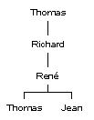
Thomas Campion, Er, sr du Mesnil et Jean Campion, Er, frères, demeurant en la paroisse de Tallevende, serg. de Vire, 62 et 60 ans, R.C.A. et R.
Thomas X Dlle Françoise de Rabastan
Richard X Dlle Perrine de la Bigne, en 1556
René X Dlle
Avenette le Gardeur, en 1602
Thomas X Dlle
Madeleine de Thoury, en 1650
Jean X Dlle
Marie Campion, en 1659
CAMPION : d'or au lion d'azur ; au lambel de gueules en chef
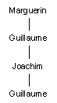
Guillaume Campion, Er, sr de St Martin, demeurant à Percy, serg. de Moyon,
élection de Coutances, 70 ans, R.C.A. et R.
Guillaume fils Marguerin X Dlle Françoise de Méhérenc en 1548
Joachim X Dlle Catherine Campion en 1586
CAMPION : portent : d'or au lion d'azur ; à la bordure de gueules.
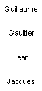
Jacques, Er, sr de la Garenderie, demeurant en la paroisse de la
Meurdraquière, serg. de Cérences, dite Sabot, élection de Coutances, 72
ans, R.C.A. et R.
Gaultier X Dlle Jacqueline Martin
CAMPION : portent : d'azur au lion d'azur ; au lambel de gueules.
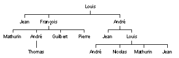
Thomas Campion
Er,
sr
du Mesnil de la paroisse de St Jean des Baisants, serg. de Thorigny.
André Campion, pour lui et Nicolas, Mathurin et Jean Campion ses
frères de la paroisse de St Romphaire, serg. de Moyon, élection de
Coutances.
Louis X Dlle
Jeanne Gaultier en 1539
François X Dlle Marguerite Philippes
Thomas fils André X Dlle Jeanne le Sueur en 1638
Louis Campion fils André X Dlle Hélène Auvray en 1652
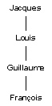
François de Saint-Gilles, Er, sieur de Fleury,
45 ans, R.R.
Jacques avait épousé Dlle Marguerite de Pierrepont
Louis fils dudit Jacques, Dlle Diane Péricard
Guillaume, Dlle Marie Dumont
François son fils, Dlle Marguerite
Campion
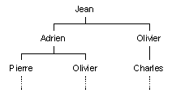
Jean avait épousé Dlle Savoisienne
Campion
Adrien, Dlle
Blanche Lechevalier en 1530
...
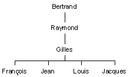
Bertrand épousa Dlle Barbe de Bordes
Raymond, Dlle
Jeannette Campion en 1575
Gilles, Dlle
Jeanne Ernault en 1604
Jean, fils Gilles, Dlle Barbe Campion
en 1641
...
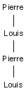
Louis du Hamel, Er, seigneur et patron du Saussey, demeurant en la paroisse Saint-Pierre-de-Coutances, 55, R.R.
Pierre épousa Dlle Anne de Quatre-Livres (?)
Louis,Dlle
Louise Ribault en 1564, et, ensuite, Dlle Nicole de Hautemer
Pierre, Dlle
Marguerite de Beaulieu en 1598
Louis, Dlle
Anne Le Champion ou
Campion en 1645
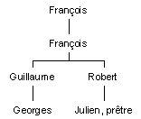
Georges des Moutiers, Er, demeurant à Condé-sur-Vire, serg. de Thorigny, élect. de Bayeux et Me Julien des Moustiers, Er prêtre, curé de Biéville, seigneur et patron du Pont.
François Ier, épousa Dlle Péronne Moisson, en 1544
François II, Dlle Jeanne
Campion
Guillaume, Dlle Roberte Sinel (?) (peut-être Senot ou Bunel) en
1598
Georges, Dlle
Marie de la Broise en 1635
Robert, Dlle
Louise de la Gonnivière en 1601
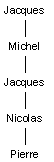
Pierre de Pierre, Er, 33 ans, de Cérences, serg. dudit lieu, R.R.
Michel fils Jacques épousa Dlle Isabeau Campion
en 1572
Jacques fils Michel, Dlle Anne Moussard (?) en 1607
Nicolas fils dudit Jacques, Dlle Jeanne Fouquet ou Fouques en 1633
Pierre fils dudit Nicolas, Dlle Louise Le Cocq en 1656
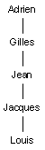
Jacques du Quesne, Er, sieur du Mesnil-Normand demeurant paroisse de Saint-Boniface serg. de Moyon, élect. de Coutances, 52 ans.
Gilles fils Adrien épousa Dlle Françoise Pichard en 1592
Jean fils Gilles, Dlle Jeanne
Campion en 1614
Jacques fils dudit Jean Dlle Elisabeth Le Vallois en 1645
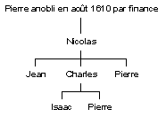
Jean Guichard, Er seigneur et patron de Villiers serg. de Saint-James élect. d'Avranches pour lui, Isaac et Pierre ses neveux
Nicolas fils de Pierre anobli épousa Dlle Anne
Parrin en 1612
Jean, Dlle
Geneviève Campion, en 1651
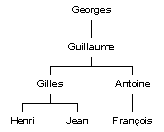
Henri, Er, sieur des Forges, 36 ans ; Jean, Er, sieur des Tourelles, 26 ans, demeurant paroisse de Hudimesnil, serg. de Pierre, élect. de Coutances, François, sieur des Fallésières, en la même paroisse, 26 ans ; R.R.
Georges épousa Dlle Guillemine Le Roux en 1537
Guillaume, Dlle Olive Rousselin ou Rouxelin, en 1583
Gilles, Dlle
Jeanne Campion, en 1626
Henri, Dlle
Marie de Mary en 1659
Antoine, Dlle
Catherine Le Gendre, en 1637
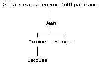
Jacques Le Maistre, Er sieur des Moulins d'Anisières, par. du Chéfresne, serg. de Moyon, élect. de Coutances, 21 ans ; François, Er, sieur du Cartel, par. du Mesnil-Aubert, serg. de Pierre, élect. de Coutances, 55 ans, R.R.
Jean fils Guillaume épousa Dlle
Suzanne Meslin
François, Dlle Jeanne
Campion en 1651